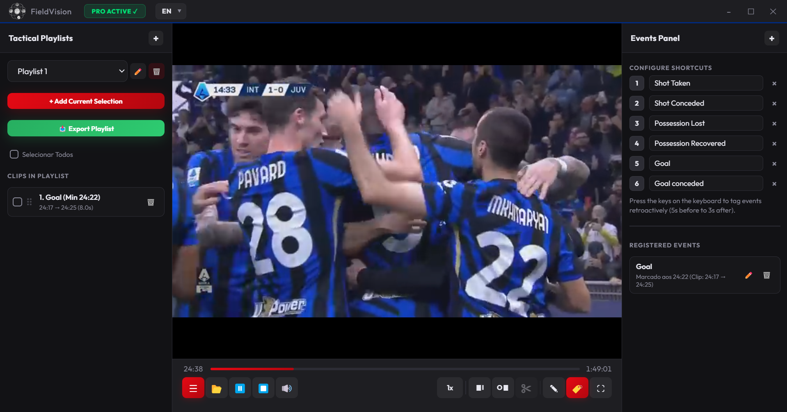
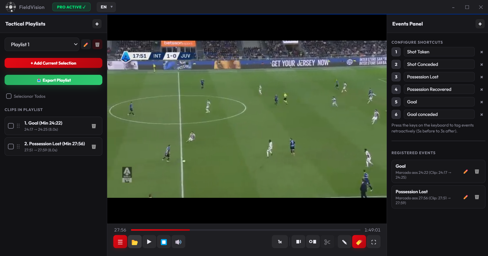
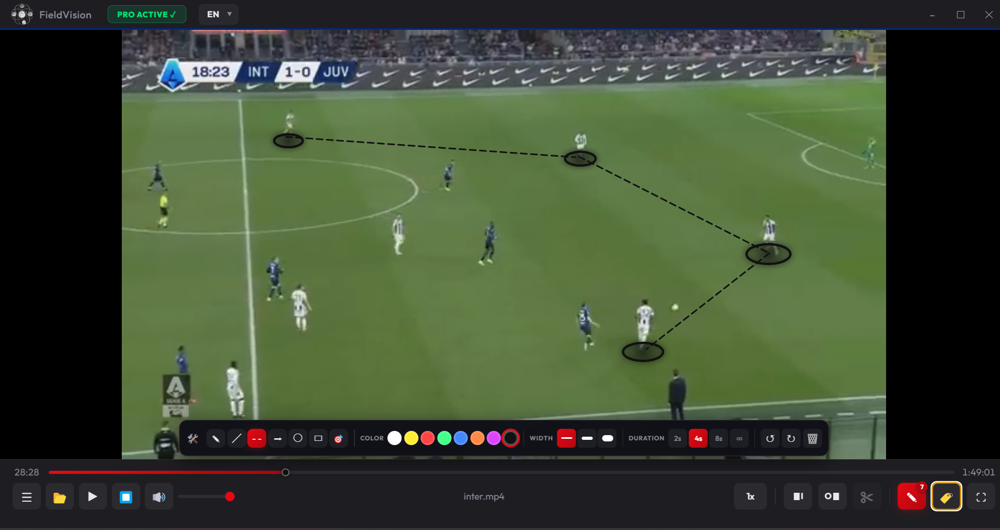
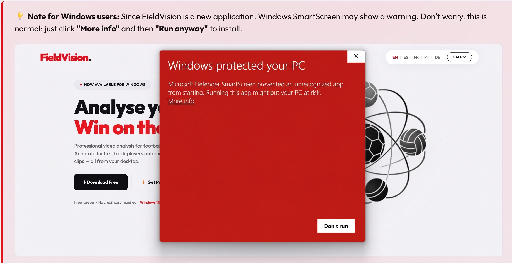

Professional video analysis for football, rugby, hockey and more. Annotate tactics, track players automatically, and export stunning clips — all from your desktop.
Veja exemplos reais do que podes obter com a versão paga do FieldVision.
From grassroots to professional. FieldVision gives you the tools to analyse, annotate and communicate tactics like a pro.
Select any player and FieldVision's AI tracker follows them automatically throughout the clip — no manual frame-by-frame work needed.
Draw lines, arrows, shapes and zones directly on the video. Highlight movements, pressing triggers, set pieces and more.
Trim and export clips with your annotations burned in. Share moments with players and staff in seconds — ready for WhatsApp, email or presentations.
Save your annotations per video. Come back later and pick up exactly where you left off. All data stored locally on your machine.
Your match footage never leaves your computer. No cloud uploads, no subscriptions to external servers. Your data stays yours.
Built for native Windows performance. Supports MP4, MKV, AVI, MOV and more. No browser lag, no limits.
FieldVision is designed to get out of your way and let you focus on the tactics.
Download FieldVision for free and run the app on your Windows PC in seconds. No account needed.
Open any video file from your computer. Supports all major formats — MP4, MKV, AVI, MOV and more.
Pause the video, draw your tactical annotations, or select a player to track automatically with AI.
Trim the moment you want, export with annotations burned in. Ready to share with your team instantly.



Try FieldVision for free. Upgrade when you're ready to unlock the full power of professional analysis.
Perfect for getting started and exploring the basics.
Everything you need for serious tactical analysis. That's just €2.40/month.
Join coaches and analysts who use FieldVision to get the edge. Start free today — no credit card needed.
